Про кухню Індії
Індійська кухня характеризується великою різноманітністю спецій, трав та соусів, що варіюються в залежності від регіону. Північна частина Індії відома своїми каррі з густими соусами, таких як тікка масала та сааг, а також стравами з тандуру. Південна Індія славиться своїми гострими стравами, такими як самбар, доса та ідлі. Характерними інгредієнтами є рис, бобові, овочі та кокосове молоко. Індуси часто готують хліб, як-от чапаті чи наан.
Виберіть країну
↑ Вгору

НаанТрадиційний індійський плоский хліб із м’якого дріжджового тіста, випечений у тандирі або на сковороді. Зазвичай його подають гарячим, змащеним топленим маслом, і використовують як доповнення до каррі, соусів або інших страв.
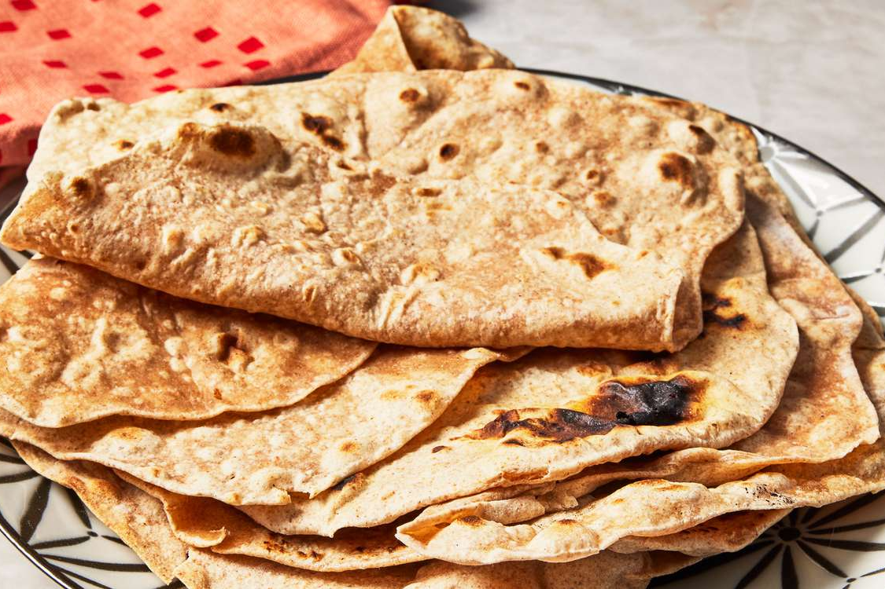
ЧапатіТрадиційний індійський плоский хліб із цільнозернового борошна, води та солі, який випікається на сухій сковороді. Він м'який і тонкий, зазвичай подається як гарнір до каррі, овочевих страв або використовується для загортання начинки.

ПаратхаІндійський плоский хліб, приготований із шаруватого тіста на основі цільнозернового борошна, обсмаженого на сковороді з маслом або гі. Його часто начиняють картоплею, сиром панір, шпинатом або спеціями, подають із йогуртом, чатні чи каррі.
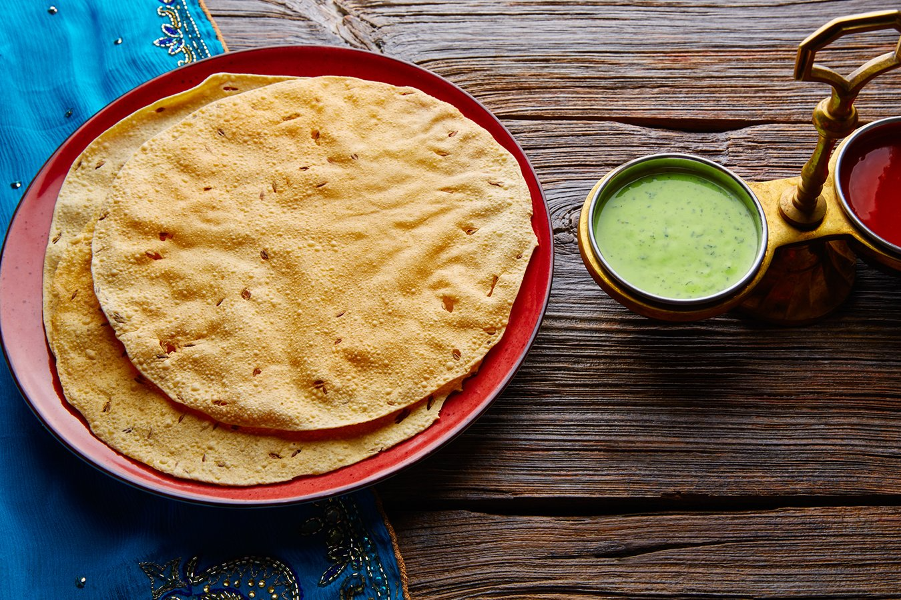
ПападамТонкий і хрусткий індійський хліб, приготований із борошна з сочевиці, нуту або рису, який зазвичай смажать у фритюрі або підсушують на вогні. Його подають як закуску або гарнір, часто із чатні, йогуртом чи соусами.
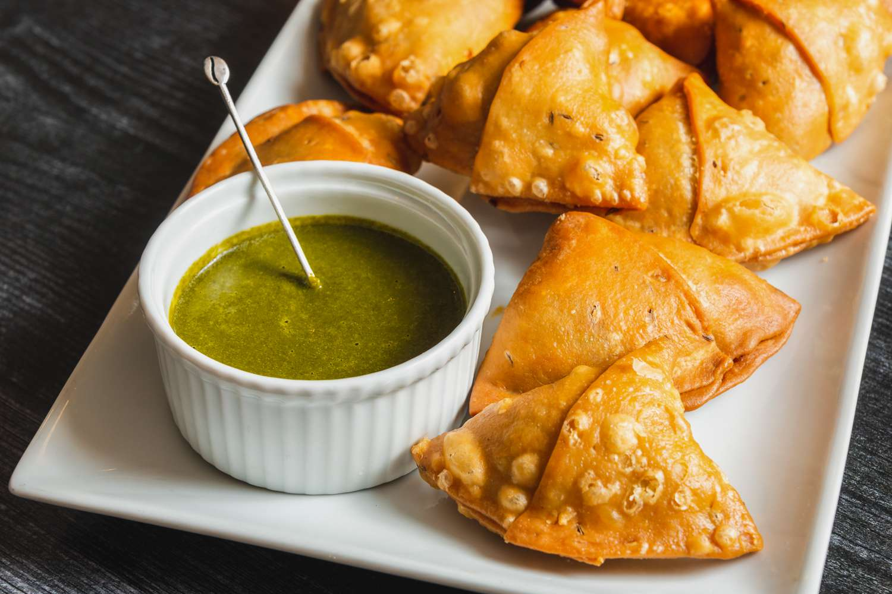
СамосаПопулярна індійська закуска у вигляді трикутних пиріжків із хрусткого тіста, наповнених пряною начинкою з картоплі, гороху, сочевиці або м'яса. Зазвичай подається із соусом чатні або йогуртовим дипом.

ПаніпуріПопулярна індійська вулична страва, що складається з хрустких порожнистих кульок (пурі), наповнених пряною водою (пані), картоплею, нутом і спеціями. Ця страва має насичений кисло-гострий смак і подається як легка закуска.
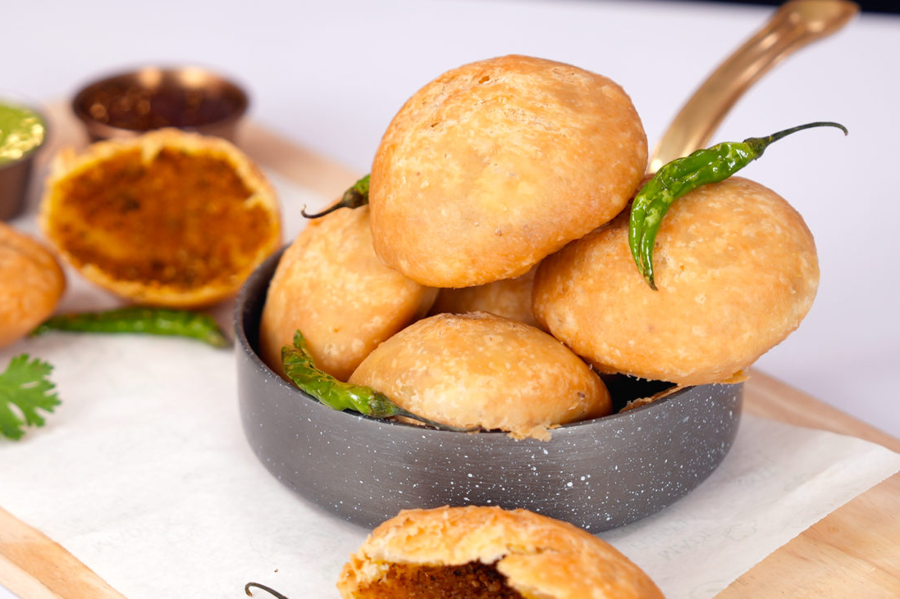
КачоріТрадиційна індійська закуска у вигляді смаженого пиріжка з хрусткого тіста, наповненого пряною начинкою з сочевиці, гороху, картоплі або спецій. Зазвичай подається гарячою із соусами чатні або йогуртом.
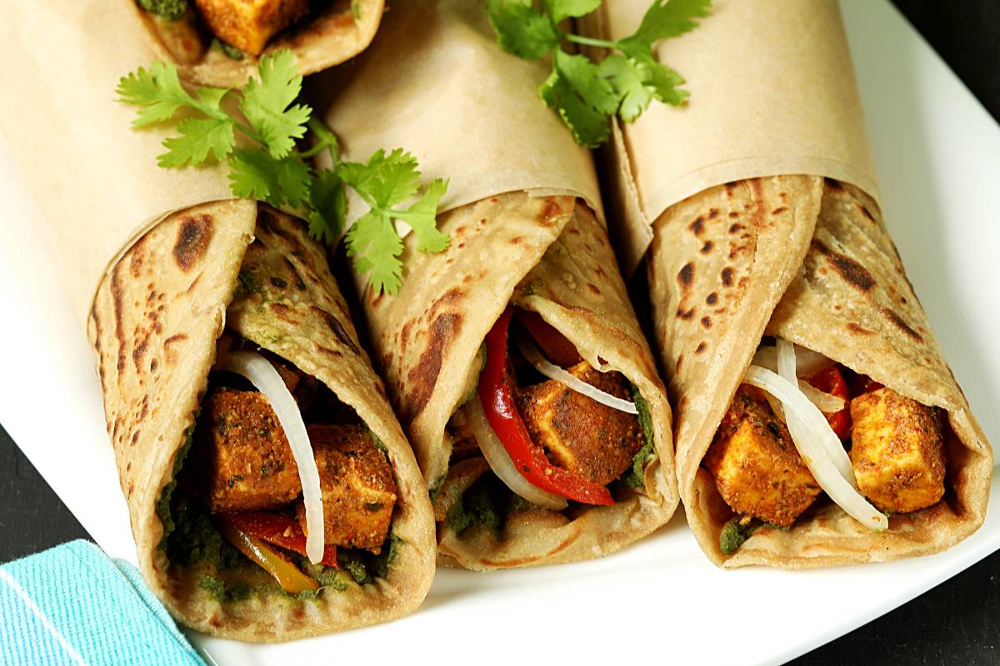
Рулети КатіПопулярна індійська вулична страва, яка складається з м’якого плоского хліба парати, загорнутого навколо начинки. Начинка зазвичай включає пряно приготоване м’ясо, овочі, яйця або сир панір, приправлені спеціями та соусами.
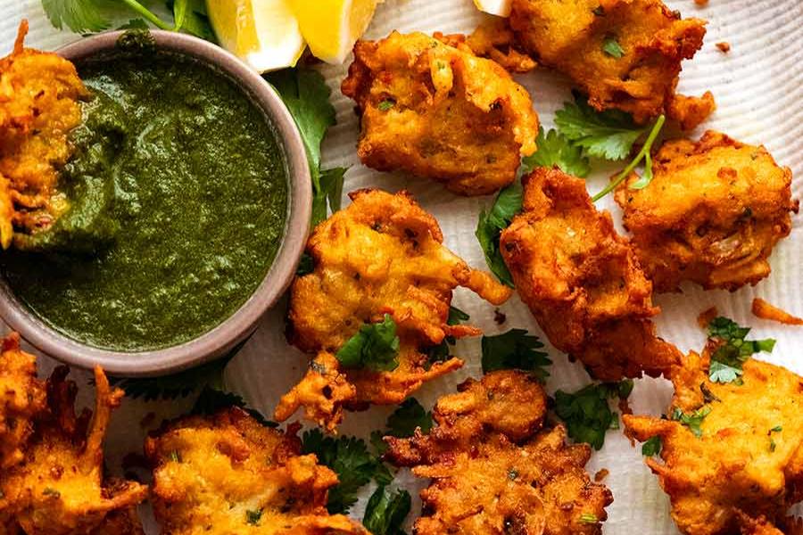
ПакораТрадиційна індійська закуска, яка складається з овочів, сиру панір або м'яса, обмочених у пряному нутовому тісті та обсмажених у фритюрі. Подається гарячою з соусами чатні або йогуртом.
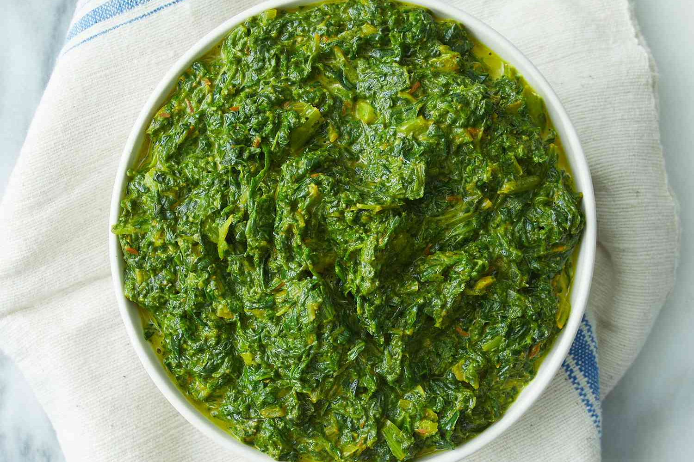
СаагТрадиційна індійська страва, що складається з тушкованих листяних овочів, таких як шпинат, гірчиця або брюква, приправлених спеціями, часником і імбиром. Подається з рисом або хлібом, таким як чапаті чи паратха.
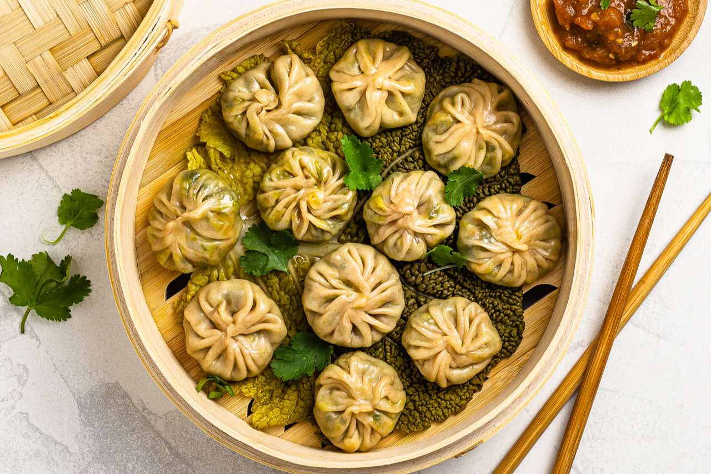
МомоПельмені, поширені в регіоні Гімалаїв, які можуть бути вареними або смаженими. Вони зазвичай наповнені м'ясом (як правило, яловичина, курка або свинина), овочами або сиром, приправлені спеціями. Момо часто подають з гострим соусом чатні або йогуртом.
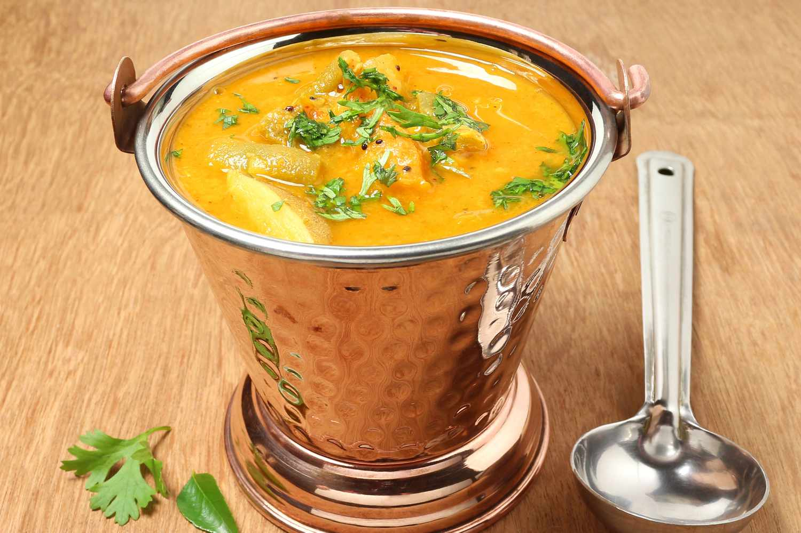
СамбарПряний південноіндійський гострий суп, приготований із чечевиці, овочів (наприклад, батату, моркви, баклажанів) і спецій, таких як гірчиця, куркума та кумін. Страва зазвичай подається з рисом або ідлі (парами з рисового борошна) як основне блюдо.
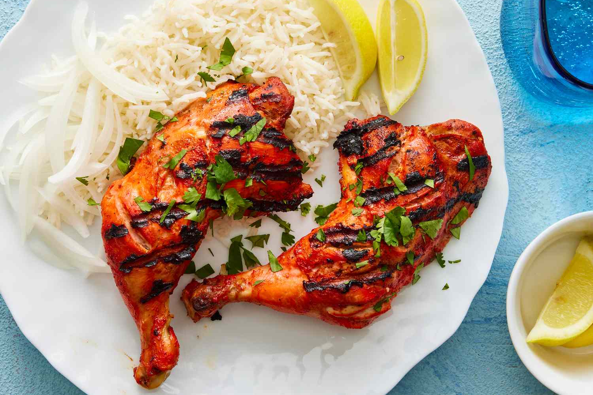
Курчата тандуріПопулярна індійська страва, у якій курка маринується в суміші йогурту, спецій та трав, таких як куркума, кумін, коріандр і гарам масала, а потім готується в спеціальній печі тандур. Результатом є ароматна, пряна та смачна курка з характерною золотистою скоринкою.

Курка тікка масалаПопулярна індійська страва, що складається з маринованих шматочків курятини, запечених на грилі та приготованих у багатому, ароматному соусі з помідорів, йогурту та спецій, таких як гарам масала, кумін і коріандр. Страва подається з рисом або хлібом, як чапаті чи наан.
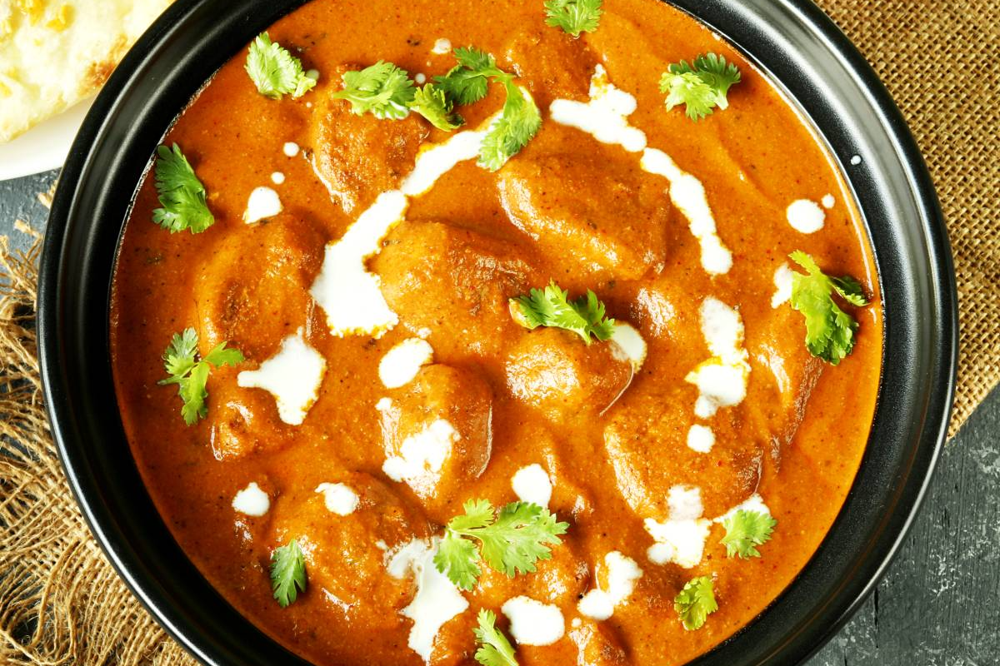
Курча в масліПопулярна індійська страва, що складається з ніжних шматочків курятини, маринованих у спеційній суміші йогурту, приготованих у багатому кремовому соусі з помідорів, масла, вершків і ароматних спецій. Страва має м'яку текстуру та насичений смак, часто подається з рисом або хлібом, як наан.
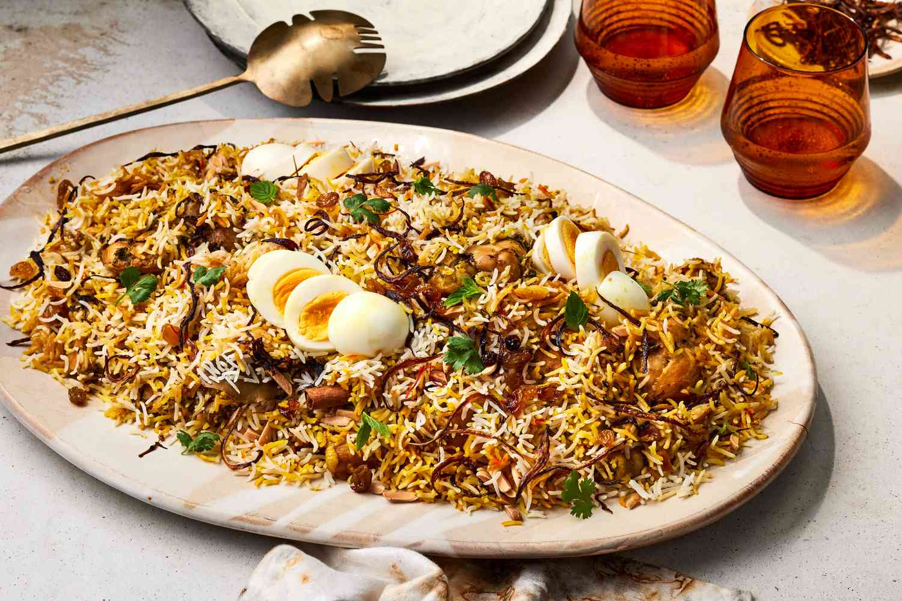
Бір'яніСмажений рис з ароматними спеціями, таким як кумін, кардамон, коріандр та лавровий лист, приготований з м'ясом або овочами. Страва готується шарами з рису та начинки, часто з додаванням йогурту та смаженого цибулі. Бір'яні зазвичай подається з йогуртовим соусом або салатом.
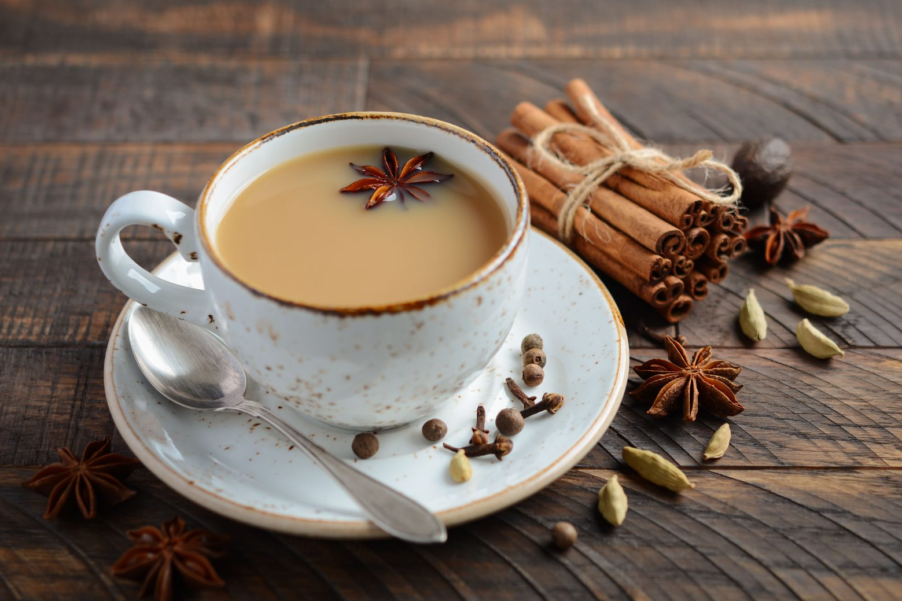
Чай МасалаТрадиційний індійський чорний чай, приготований з суміші спецій, таких як кардамон, кориця, імбир, гвоздика та чорний перець, змішаний з молоком і цукром. Напій має насичений аромат і пряний смак, і є популярним вибором на сніданок або в перервах протягом дня.
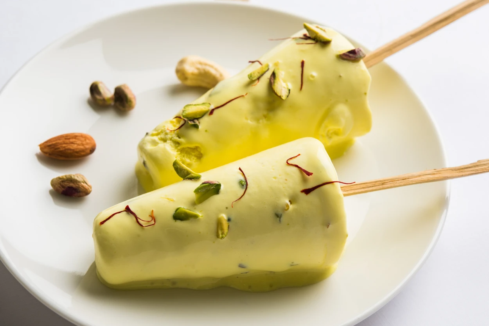
КульфіІндійський десерт, схожий на морозиво, але з густішою текстурою. Готується з молока, цукру та ароматизаторів, таких як кардамон, фісташки, манго або трояндова вода. Кульфі часто подається на паличці або в маленьких формах, і має кремовий, насичений смак.
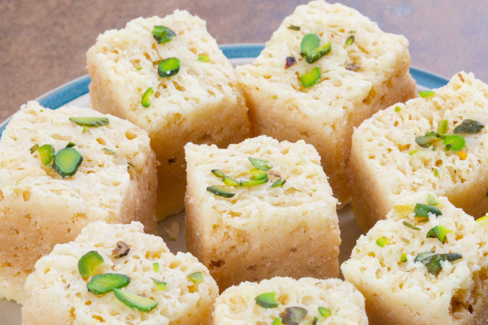
БурфіПопулярний індійський десерт, приготований з вареного молока, цукру та густих добавок, таких як горіхи, кокос або манка. Він має щільну текстуру і часто нарізається на маленькі квадратні або прямокутні шматочки. Бурфі може бути ароматизований кардамоном, шафраном або різними специями.
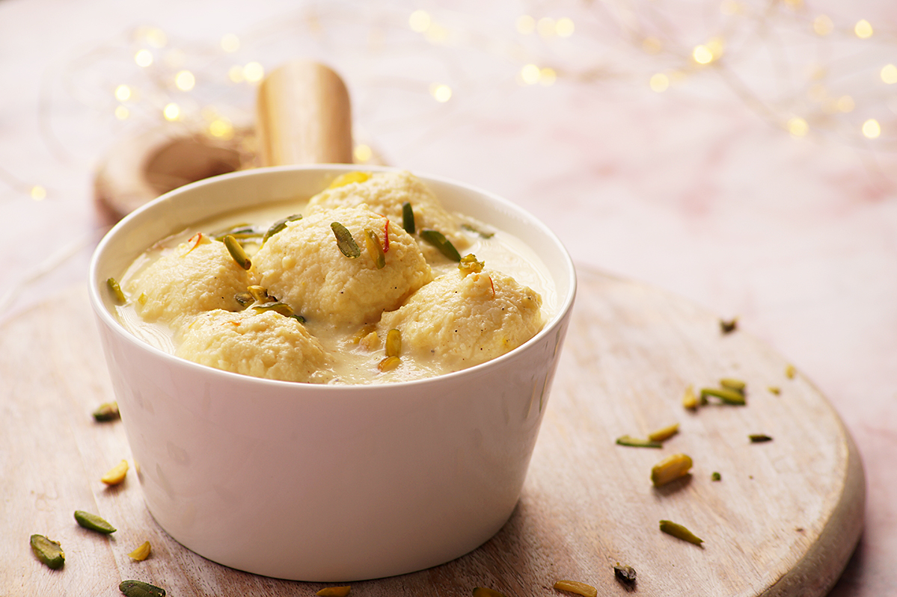
Рас малайНіжний індійський десерт, що складається з м'яких рисових кульок або сира панір, занурених у солодкий молочний сироп з ароматами кардамону та шафрану. Подається холодним, часто з додаванням фісташок або мигдалю для прикраси. Страва має кремову текстуру і освіжаючий смак.